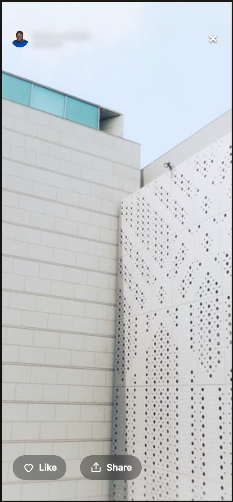

Lesson 4 · Tasks: success and time
A usability task gives people a goal, and the data says whether they reached it, and how fast.
A simple question
62 s
Stride, a running app, asked 40 people to log a run. The average time of the runs was 62 seconds. So logging a run takes about a minute?
Write down two things that could make that sentence wrong before the next slide.
What a task is
In their words: "Log yesterday's 5 km run."
The same screen for everyone, so times compare.
What in the data shows they got there: a screen reached, a choice made.
The app knows the goal: the run ends by itself when it's reached. Or they press Give up.
Usability tests (Maze, UserTesting, a researcher with a notebook) all run on tasks. The task is only as useful as its success criteria.
Good tasks, bad tasks
"Like the photo of the three puppies."
"Find the black dog on the beach and open it."
"Like any photo from a dog search."
Each ends in a choice the app records, and takes a few steps to reach.
"Find a photo you love." (no row says "love")
"Write a funny bio." (typing isn't recorded)
"Open your profile." (one tap: too simple)
A task must end in something the data can check, and take at least 3 choices.
One photo, or any?
"Like the three puppies" has one right answer: Omer liked a dog, just not that one, so his run goes on. "Like any photo" would have counted him. Real usability tasks are usually specific.
How they got there
The best route is the fewest choices that reach the goal. For "open a photo from a dog search" it is 3: Search → "dog" → open a photo.
Direct and indirect are both successes. Indirect is a finding too: something on the way sent people the wrong way first.
Runs and people
The app ended the run: the goal was reached.
They said they couldn't. A clear failure.
The page reloaded or closed mid-task. Often the same person starts again, in a new visit.
Count runs, and the interrupted run is a "failure" by someone who then succeeded. Count participants (one result each: their last run), and it isn't.
Time to success
The app stops the clock itself, so a successful run's time is ended_at − started_at. Only successful runs have a time to success.
Ten successful runs, in seconds
Each dot is one run. Nine people took 22–40 seconds. One took 10 minutes. The mean (88 s) describes nobody. The median, the middle of the runs, says 32 seconds: what a typical person needed.
Principle · How long?
Times are skewed: a few runs take ten times longer than the rest. Report the median, and say so.
The long runs are worth a look too: were they lost, or just away? But they shouldn't decide what "how long" means.
When nobody can do it
Stride asked people to "export your run to share it". The Export button looks fine, and does nothing. Every participant pressed it, some twice, then gave up or left.
0 of 40 succeeded.
The data shows they tried: the press is recorded, it just led nowhere.
Fix the task or the app. Never "people can't use it".
Now, our app

Like works: the heart fills, and the app records like:p02 (press again: unlike:p02).
Share looks just the same, and does nothing. The app records nothing.
On screen you can't tell them apart. In the data you can: that's what value is for.
Your task
Each try is a row in a new table, task_runs: task, started_at, ended_at, and ended_by (success or gave_up). What they pressed during it is in selections, between start and end.
Once you check your first question, your task is locked.
Your guided walkthrough
The practice data has traps in it. The questions know where. They won't tell you.
Lesson 4 · Summary
What you learnt
What to do now